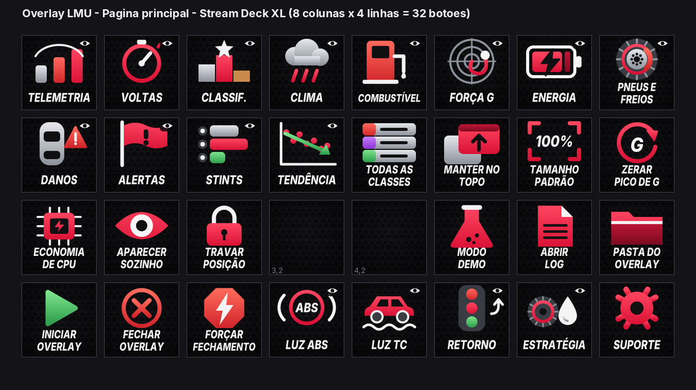
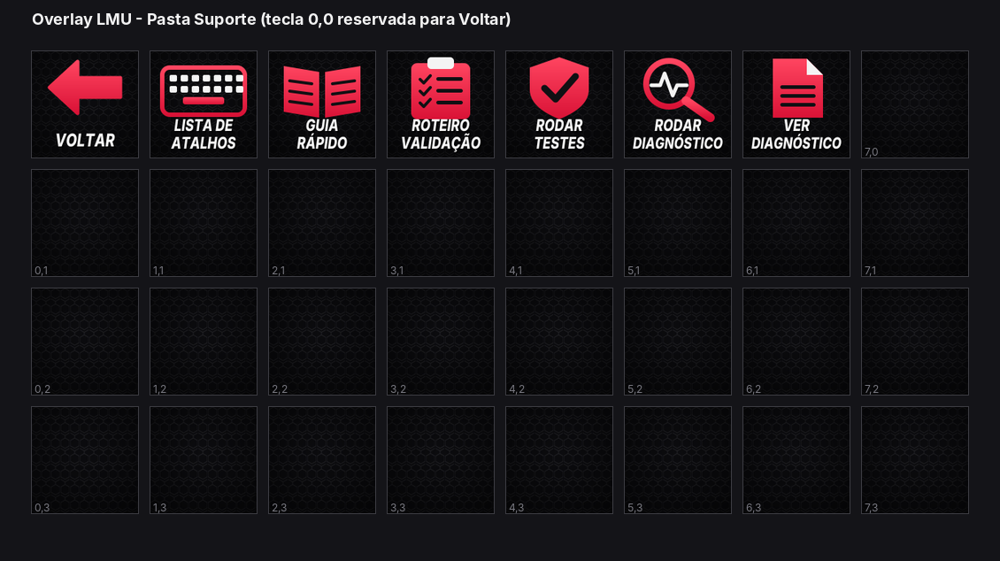

O overlay registra atalhos globais do Windows (teclas F13 a F24, que quase nenhum teclado tem, para não conflitar com o jogo) e cada um faz exatamente o mesmo que o item correspondente do menu da bandeja. O perfil do Stream Deck apenas aperta essas teclas (ação Sistema > Hotkey) e abre arquivos do pacote (iniciar, log, guia...).


streamdeck/Overlay LMU.streamDeckProfile.C:\WolfxRacing\wolfxracing-overlay-lmu\overlay. Se você extraiu em outro lugar, rode antes:python streamdeck/ajustar_perfil.py "D:\Caminho\Do\overlay"
Isso cria ...\_ajustado.streamDeckProfile com o seu caminho; importe esse arquivo.
| Atalho | Função |
|---|---|
Ctrl+Shift+F13 |
Mostrar/ocultar telemetria |
Ctrl+Shift+F14 |
Mostrar/ocultar voltas (delta e combustível) |
Ctrl+Shift+F15 |
Mostrar/ocultar classificação |
Ctrl+Shift+F16 |
Mostrar/ocultar clima e chuva |
Ctrl+Shift+F17 |
Mostrar/ocultar painel de combustível e pit |
Ctrl+Shift+F18 |
Mostrar/ocultar força G |
Ctrl+Shift+F19 |
Mostrar/ocultar energia virtual e combustível |
Ctrl+Shift+F20 |
Mostrar/ocultar pneus e freios |
Ctrl+Shift+F21 |
Mostrar/ocultar danos do carro |
Ctrl+Shift+F22 |
Mostrar/ocultar alertas na pista |
Ctrl+Shift+F23 |
Mostrar/ocultar histórico de stints |
Ctrl+Shift+F24 |
Mostrar/ocultar tendência de ritmo |
Alt+Shift+F13 |
Modo economia de CPU (liga/desliga) |
Alt+Shift+F14 |
Aparecer sozinho ao entrar no carro (liga/desliga) |
Alt+Shift+F15 |
Travar posição das janelas (liga/desliga) |
Alt+Shift+F16 |
Zerar o pico de G |
Alt+Shift+F17 |
Classificação: mostrar todas as classes (liga/desliga) |
Alt+Shift+F18 |
Manter o overlay por cima do jogo (liga/desliga) |
Alt+Shift+F19 |
Restaurar o tamanho das janelas (100%) |
Alt+Shift+F20 |
Fechar o overlay |
Alt+Shift+F21 |
Mostrar/ocultar luz do ABS |
Alt+Shift+F22 |
Mostrar/ocultar luz do TC |
Alt+Shift+F23 |
Mostrar/ocultar retorno à pista |
Alt+Shift+F24 |
Mostrar/ocultar estratégia de pneus |
ATALHOS_LMU de overlay/ov_atalhos_lmu.py. As combinações são diferentes das do overlay de iRacing, então os dois perfis convivem sem colisão. O LMU não tem perfis Treino/Classificação/Corrida.Os ícones (144x144) e o perfil são gerados por scripts em streamdeck/gerador a partir da tabela de atalhos do próprio overlay (nenhum comando é inventado nos scripts). Veja o mapa_comandos*.md para o mapa completo (posição das teclas x atalho x ícone). Os ícones são desenhos originais do projeto.